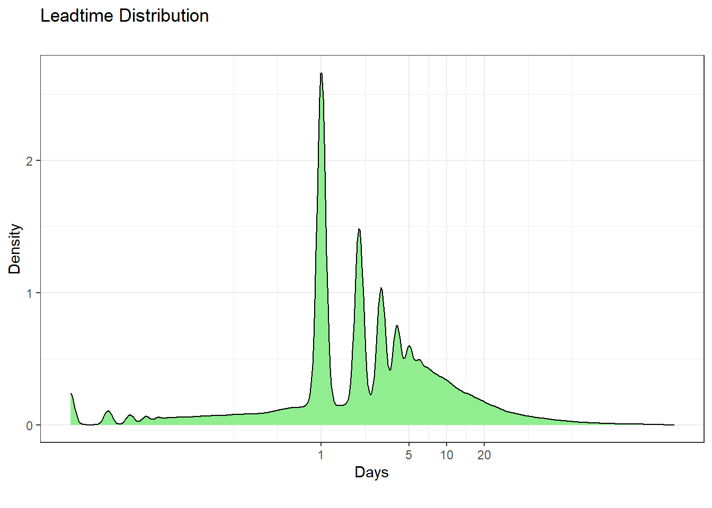
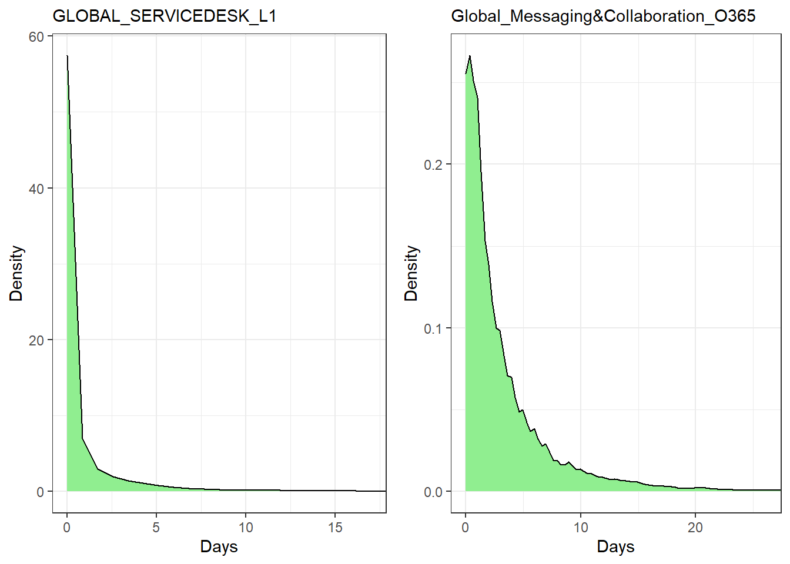
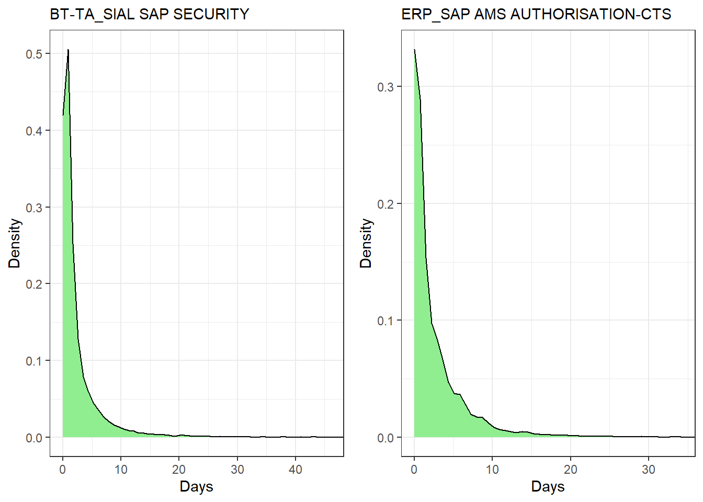
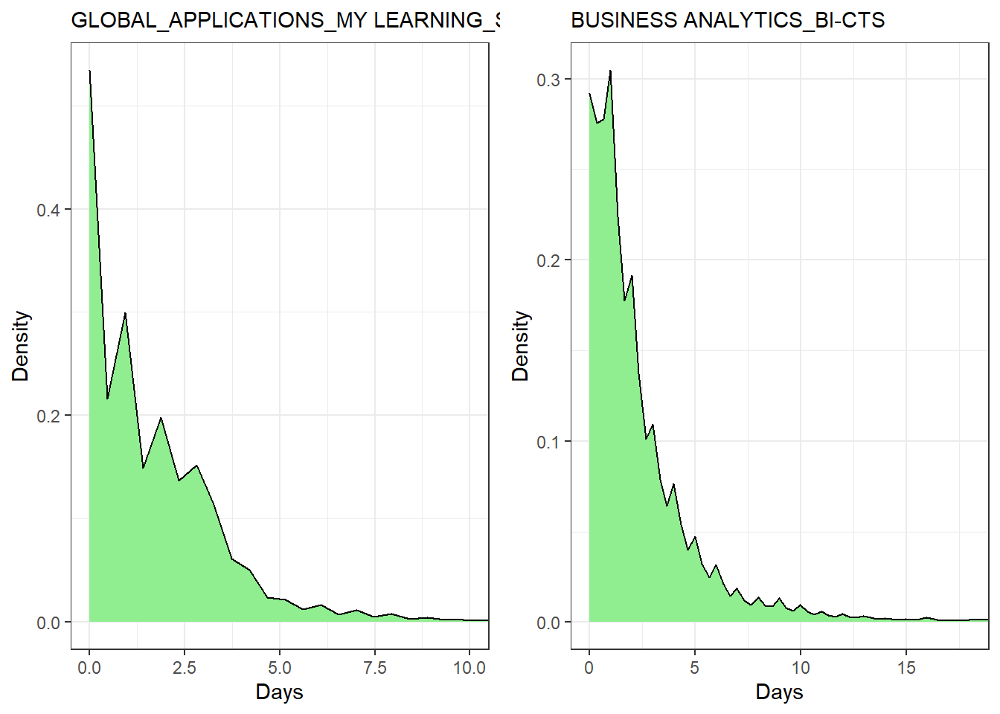
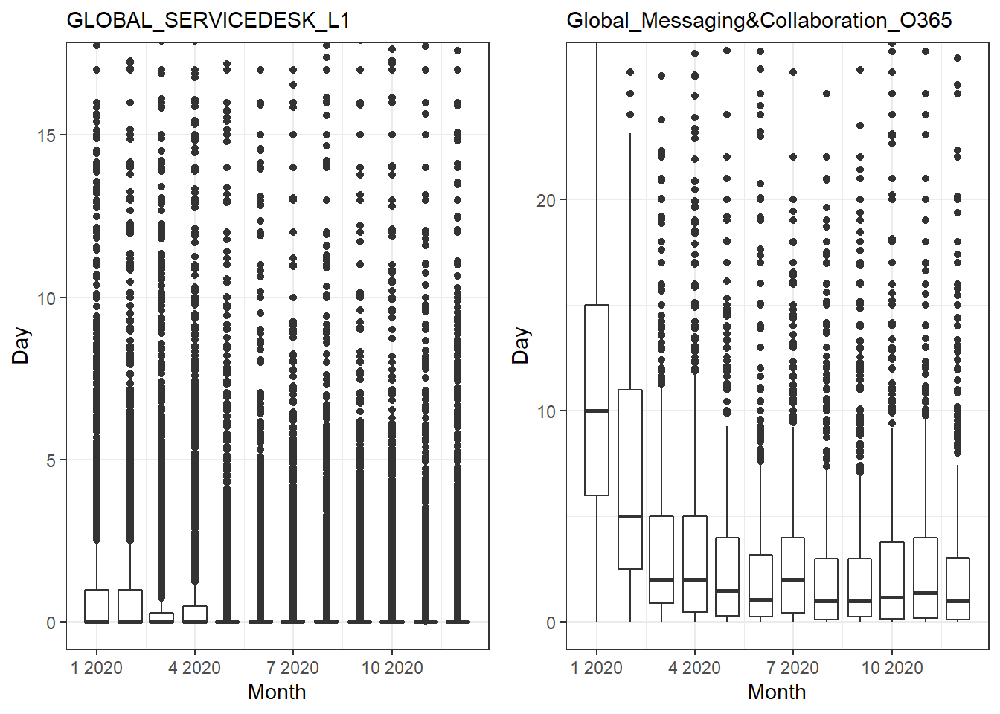
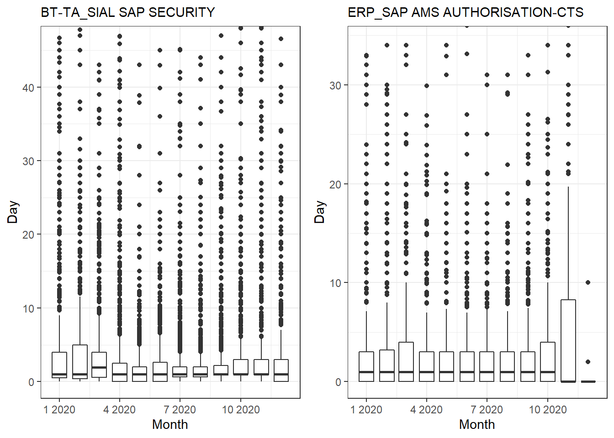
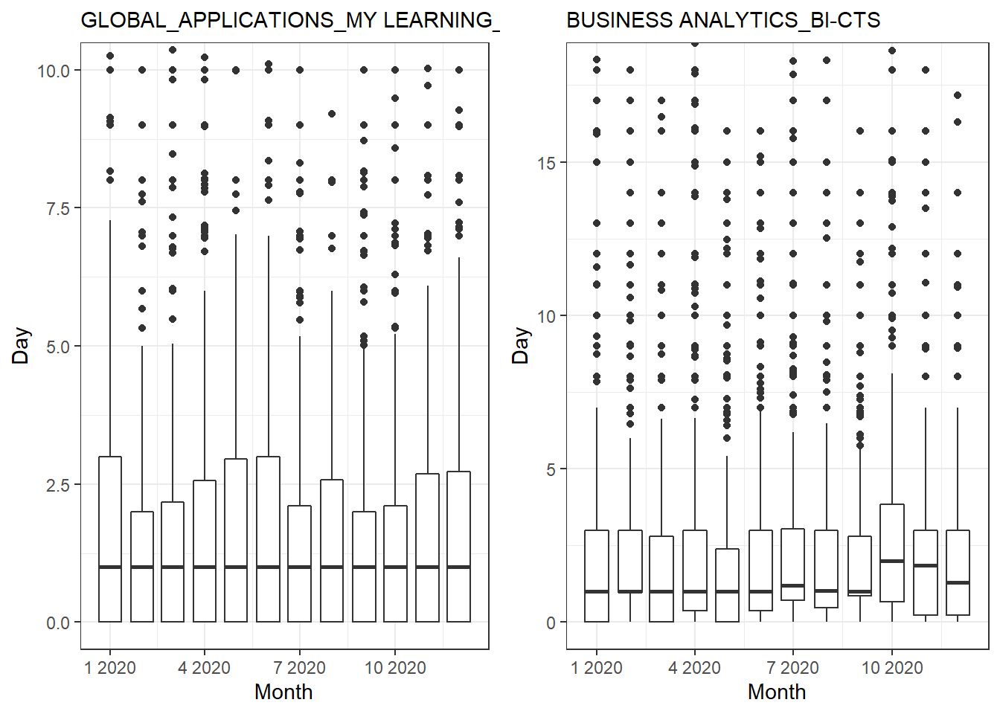

Chapter 2 Explore Data
2.1 Data by Assignment
Data resolved in 2020 by assigment group, measurement is the leadtime, # of day, to resolve the request Use standard R function: summarise_at
# 그룹별 데이터
grp <- "assignment"; col <- "leadtime.day" # leadtime.hour
IT.leadtime <-
DT %>% filter(resolved >= "2020-01-01" & resolved <= "2020-12-31") %>%
group_by(.dots = all_of(grp)) %>%
summarise_at(vars(leadtime.day), lst(length,median, mean, sd, max))
IT.leadtime[order(IT.leadtime$length, decreasing = TRUE),] %>% head(20)# A tibble: 20 x 6
assignment length median mean sd max
<chr> <int> <dbl> <dbl> <dbl> <dbl>
1 GLOBAL_SERVICEDESK_L1 125827 0 1.13 6.67 434
2 GLOBAL_SERVICEDESK_SRM 49934 0 1.37 3.87 201.
3 BT-TA_SIAL SAP SECURITY 25681 1 3.53 11.8 445.
4 GLOBAL_SERVICEDESK_SRM UIS 21852 0 1.63 5.06 168
5 GLOBAL_SERVICEDESK SIAL_L1 20176 0 1.30 9.67 423.
6 EMEA_GERMANY-DARMSTADT_FIELDSUPPORT UIS 17875 1 4.77 10.7 311.
7 GLOBAL_APPLICATIONS_QA_MANGO-ACN 14152 1 2.72 8.30 267.
8 Global_Messaging&Collaboration_O365 13988 1.66 3.39 6.03 169.
9 HOSTING_IT WINDOWS VIRTUALIZATION CITRIX SER~ 13206 3 6.57 11.1 176.
10 GLOBAL_APPLICATIONS_MY LEARNING_SUPPORT-CTS 11983 1 1.78 4.78 239.
11 BUSINESS ANALYTICS_BI-CTS 11376 1 2.39 4.33 170.
12 ERP_SAP AMS AUTHORISATION-CTS 10789 1 3.23 10.3 371.
13 GLOBAL_SERVICEDESK_UAM 10581 1 2.00 5.04 384.
14 EUS_France_FieldSupport 9869 1 4.56 11.0 163.
15 GLOBAL_APPLICATIONS_QA_TRACKWISE-ACN 9752 0.77 1.53 4.43 344.
16 Global_ServiceNow_Support-CTS 9402 0 0.936 3.25 64
17 DCO_AD_Services_L2 8770 1 3.80 9.68 328.
18 EUS_CHINA-SHANGHAI 8243 0 1.30 2.85 75.7
19 IDENTITY & ACCESS MGMT_SIAL IAM SERVICES_L2 8202 0 0.456 2.14 74
20 EUS_Bangalore_India 8121 2 5.72 10.4 253. Use customized function: zdesc.stat2
IT.leadtime2 <-
DT %>% filter(resolved >= "2020-01-01" & resolved <= "2020-12-31") %>% select(all_of(grp), all_of(col)) %>%
group_by(.dots = all_of(grp)) %>% nest() %>% # 동적으로 group by하기
mutate(stat = map(data, zdesc.stat2)) %>%
unnest(stat) %>% arrange(desc(n))
IT.leadtime2$data <- NULL; IT.leadtime2 <- as_tibble(IT.leadtime2)
IT.leadtime2[order(IT.leadtime2$n, decreasing = TRUE),] %>% head(20)# A tibble: 20 x 14
assignment n na.count min max range mean sd qt1st qt2nd qt3st
<chr> <int> <int> <dbl> <dbl> <dbl> <dbl> <dbl> <dbl> <dbl> <dbl>
1 GLOBAL_SE~ 125827 0 0 434 434 1.13 6.67 0 0 0.08
2 GLOBAL_SE~ 49934 0 0 201. 201. 1.37 3.87 0 0 1.24
3 BT-TA_SIA~ 25681 0 0 445. 445. 3.53 11.8 0.38 1 3
4 GLOBAL_SE~ 21852 0 0 168 168 1.63 5.06 0 0 1.86
5 GLOBAL_SE~ 20176 0 0 423. 423. 1.30 9.67 0 0 0.3
6 EMEA_GERM~ 17875 0 0 311. 311. 4.77 10.7 0 1 5
7 GLOBAL_AP~ 14152 0 0 267. 267. 2.72 8.30 0 1 3
8 Global_Me~ 13988 0 0 169. 169. 3.39 6.03 0.37 1.66 4
9 HOSTING_I~ 13206 0 0 176. 176. 6.57 11.1 1 3 8
10 GLOBAL_AP~ 11983 0 0 239. 239. 1.78 4.78 0 1 2.35
11 BUSINESS ~ 11376 0 0 170. 170. 2.39 4.33 0.290 1 3
12 ERP_SAP A~ 10789 0 0 371. 371. 3.23 10.3 0 1 3
13 GLOBAL_SE~ 10581 0 0 384. 384. 2.00 5.04 0 1 2.65
14 EUS_Franc~ 9869 0 0 163. 163. 4.56 11.0 0 1 4
15 GLOBAL_AP~ 9752 0 0 344. 344. 1.53 4.43 0 0.77 2
16 Global_Se~ 9402 0 0 64 64 0.936 3.25 0 0 0
17 DCO_AD_Se~ 8770 0 0 328. 328. 3.80 9.68 0 1 4
18 EUS_CHINA~ 8243 0 0 75.7 75.7 1.30 2.85 0 0 2
19 IDENTITY ~ 8202 0 0 74 74 0.456 2.14 0 0 0
20 EUS_Banga~ 8121 0 0 253. 253. 5.72 10.4 1 2 6
# ... with 3 more variables: qt90th <dbl>, qt95th <dbl>, qt99th <dbl>2.2 Data visualization
Leadtime Distribution at glance for all requests in 2020 
2.3 Data visualization for top services
Density Plot for Leadtime Distribution Most of requests resolved take less than 10 days, and long tail in the graph shows long running tickets to resolve
i <- 1
assignGrp <- subset(IT.leadtime2, n > 10000)$assignment
ggplots <- vector('list', length(assignGrp))
for (k in assignGrp) {
ggplots[[i]] <-
local({
data <- DT %>% filter(assignment == k, resolved >= "2020-01-01" & resolved <= "2020-12-31")
xaxis <- quantile(data$leadtime.day, 0.99,na.rm = T)
p1 <- data %>% ggplot(aes(x = leadtime.day)) +
geom_density(fill = "lightgreen") +
coord_cartesian(xlim = c(0, xaxis)) + labs(subtitle = k, x = "Days", y = "Density") + theme_bw()
# print(p1)
})
i <- i + 1
}
grid.arrange(ggplots[[1]], ggplots[[8]], nrow = 1)
grid.arrange(ggplots[[3]], ggplots[[12]], nrow = 1)
grid.arrange(ggplots[[10]], ggplots[[11]], nrow = 1)
Monthly BoxPlot shows how much lead time varies across months and how many LRT, outlier, each service has 